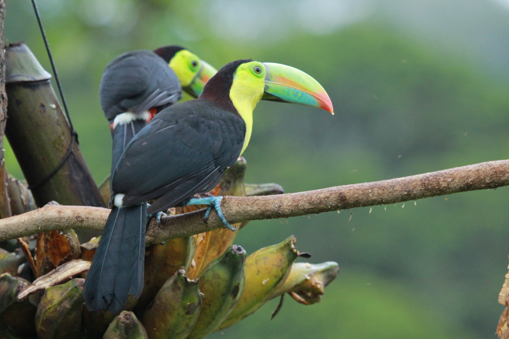
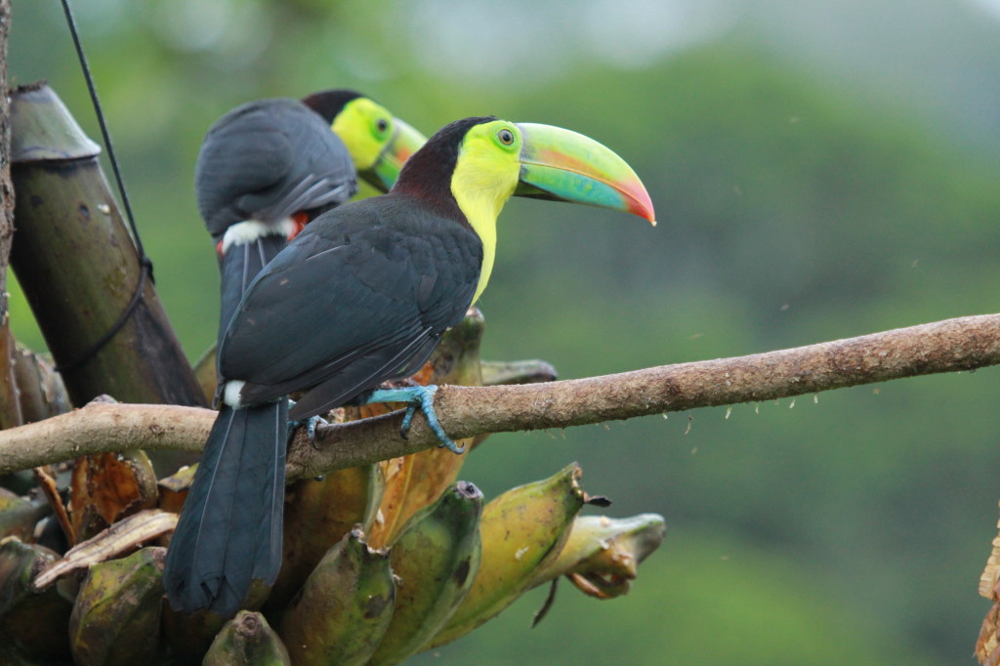
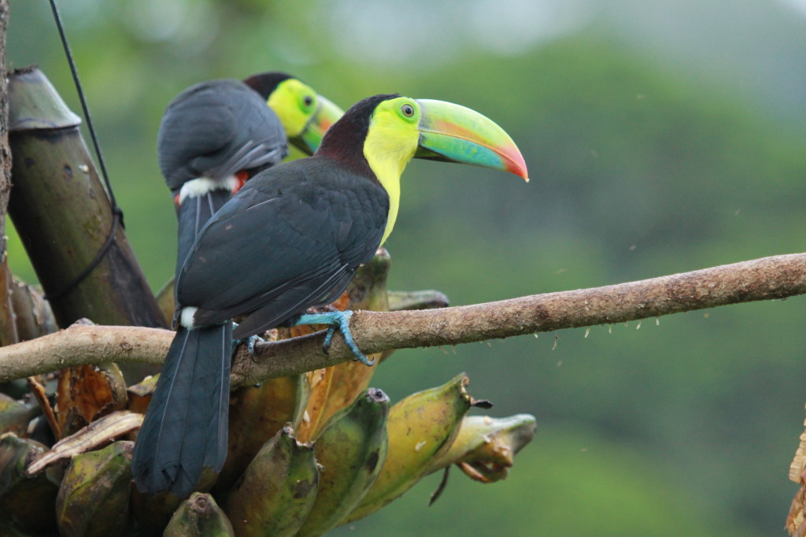
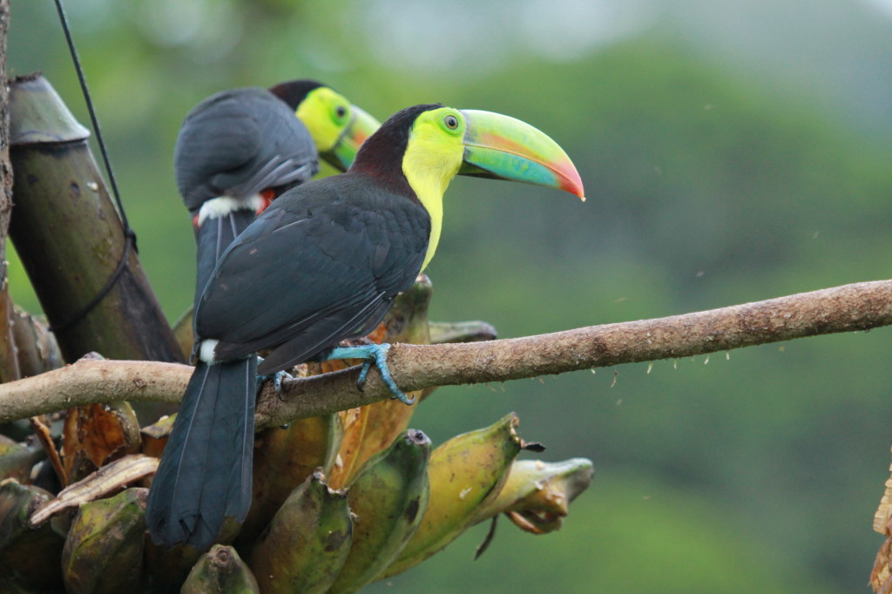

 



BIRDS
SOME-ENDANGERED
CENTRAL-AMERICA

Toucans spend their lives high in the rainforest canopies of Central and South America;

A toucan's diet "can" include many things such as fruit, insects, other birds' eggs, tree frogs, lizards, and fish.

The toucan's bill is also a big deal. Some say that the large and brightly colored bill is used to attract potential mates. Others suggest it is useful in scaring away predators or animals that might compete with the toucan for food. Toucans are known to reach deep into tree cavities to grab eggs from other birds or to dig deeply into their own nesting cavities to clear them out, and pairs have been seen tossing fruit to one another in a courtship ritual. No matter what purpose you decide on, the toucan's bill is a very useful tool! penguin
The rainbow-billed toucan is the national bird of Belize. While often compared to hornbills, toucans are actually close relatives of the woodpecker! Toucans spend their lives high in the rainforest canopy-seldom making trips to the forest floor-and nest in hollowed-out tree cavities.
Toucans are important for rainforest health and diversity in their habitats in Central and South America. These birds pass seeds from the fruit they eat through their digestive systems, which helps replant the plants.